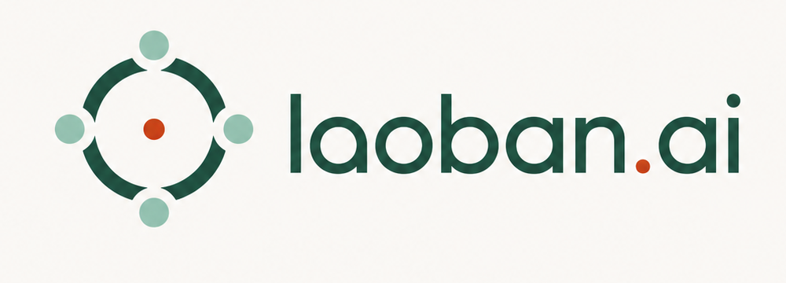

Mandated dissent
Mr. Opposite holds no dataset. He attacks the framing itself and is scored on his strongest objection — never on harmony.

Meeting called to order · Agenda: one consequential decision
An anti-sycophancy decision system for the company of one.
The board advises. The founder always decides.
→ or space to proceed through the agenda
Agenda II · The problem
Agents removed the headcount and kept the weight: every decision they escalate still lands on one founder — no partner, no pushback, no record. And the obvious advisor is the worst one:
INDUSTRY SIGNAL — ~35% of independent founders report high stress (vs ~26% with employees); about 1 in 3 has considered quitting. Secondary source.
Agenda III · The answer
laoban.ai is the decision-governance layer: put one consequential decision before a data-driven board, run it through an adversarial procedure, and receive a signed-ready governance document — not a conversation.
One question with stakes. Your preference is recorded — then sealed from the board.
Directors form positions in isolation, on exclusive evidence. Then the walls fall and positions face cross-examination.
Dissent log, support scores, kill criteria — and a ruling line only you can fill.
Agenda IV · The procedure
Founder preference: hidden · Peer positions: invisible · One evidence pipeline per seat
Same model, five verdicts — because each seat sees different evidence. Disagreement caused by information gaps resolves on its own. Surviving dissent is the signal worth a founder’s attention.
Agenda V · The charter
Each director deliberates alone. Peer positions and the founder’s preference are absent by construction — not by polite prompting.
One pipeline per seat. Every stream is fully mined before fusion — nothing dilutes in a long shared context.
Mr. Opposite holds no dataset. He attacks the framing itself and is scored on his strongest objection — never on harmony.
Then the walls fall: all evidence public, every position revisable. The final memo rests on complete information.
Dissent, support scores, kill criteria — an accountable document, not a transcript. Auditable long after the meeting ends.
Delphi method, premortem, devil’s advocate — validated decision science, encoded as an orchestration graph.
Diversity comes from evidence pipelines and mandates — not from personas.
Agenda VI · The artifact
Resolution before the founder: raise, with 60-day notice and grandfathering for existing customers. Automatic kill criteria attached.
First 6 weeks at the new price: churn > 5% or new-customer conversion −30% → resolution voids itself. Roll back. Reconvene.
Every director commits to a support score — a track record that can be audited, weighted, or fired.
The minority opinion cannot be averaged out. It stays in the record, waiting to be right.
Kill criteria turn optimism into a tripwire: cross the line and the resolution voids itself.
The ruling. Always the founder’s. Never the machine’s.
Agenda VII · Sovereignty
— the organizer’s 2026 thesis
Execution agents that do the work of a company of one. The first half of the thesis.
The half everyone skipped: governance for the decisions all those agents escalate.
The board recommends, objects, quantifies, and sets kill criteria — but the ruling field stays blank until the founder signs. That is sovereignty, shipped as a product interaction.
Agenda VIII · The business
One-person companies — founders commanding agent fleets with no one to pressure-test their judgment. Every pricing call, contract, and big purchase is a board matter.
A specialist-director marketplace — legal, growth, infra seats subscribed individually — where each director’s track record reprices the seat over time.
Built by a company of one — protected by a board.
Meeting adjourned · BUIDL OPC Hackathon SG · 12 July 2026
laoban.ai — live demo to follow